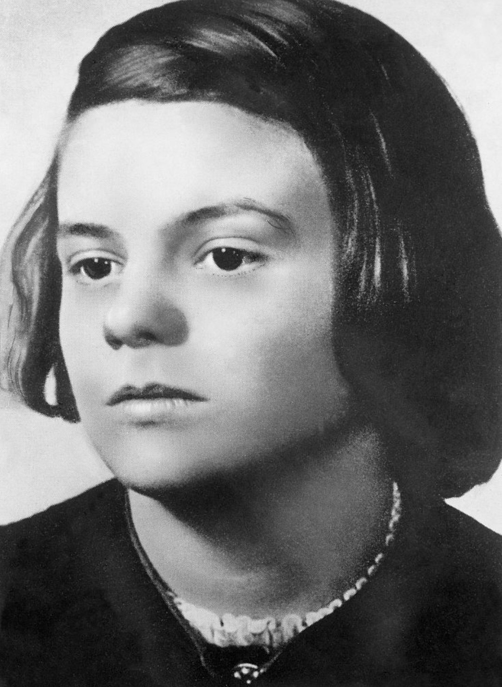

Sophie Scholl – Portrait d’époque (Rose Blanche)
Sophie Scholl (1921–1943) est l’une des figures les plus emblématiques de la résistance civile allemande contre le régime nazi. Étudiante à Munich, elle rejoint le groupe clandestin de la Rose Blanche aux côtés de son frère Hans et de plusieurs camarades. Leur combat repose sur la diffusion de tracts dénonçant les crimes du régime et appelant les Allemands à ouvrir les yeux.
À partir de 1942, Sophie participe activement à la rédaction, la duplication et la distribution de tracts antinazis. Elle prend des risques considérables, consciente que la Gestapo traque toute forme de dissidence. Son rôle est essentiel : elle encourage, organise, et pousse le groupe à agir malgré la peur.
Le 18 février 1943, Sophie et Hans Scholl sont surpris en train de disperser des tracts dans l’université de Munich. Arrêtés immédiatement, ils sont interrogés, jugés en quelques heures et condamnés à mort.
Sophie Scholl est exécutée à la guillotine le 22 février 1943. Elle avait 21 ans. Ses derniers mots, rapportés par les témoins, témoignent d’un courage exceptionnel et d’une conviction profonde dans la justice et la liberté.
Aujourd’hui, Sophie Scholl est un symbole universel de courage moral. En Allemagne, des écoles, des rues, des monuments et des institutions portent son nom. Son engagement continue d’inspirer les générations comme un exemple de résistance pacifique face à la tyrannie.